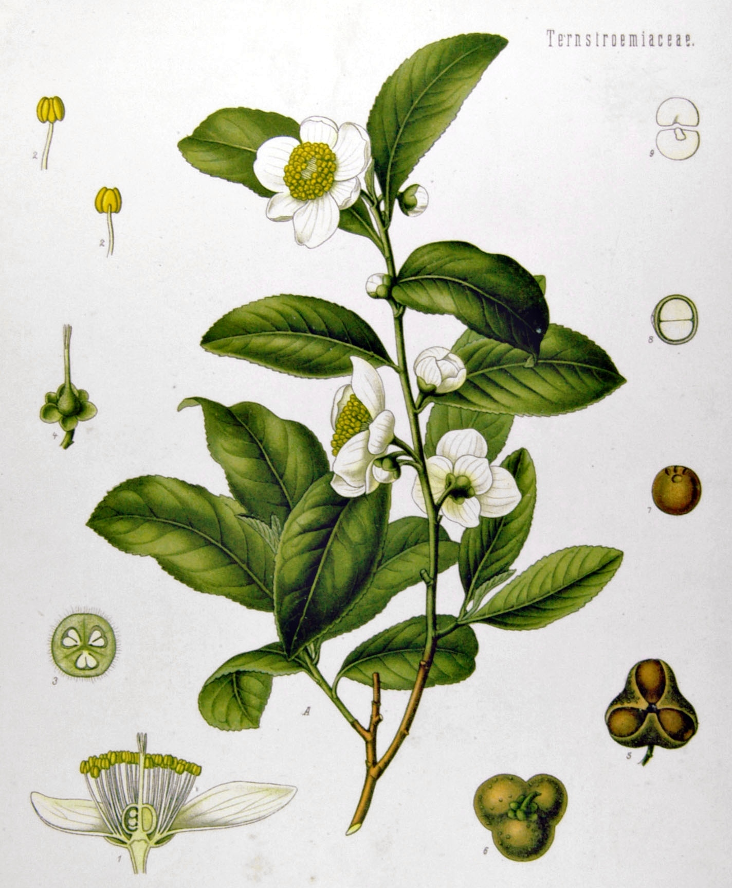

GALLERY
Tea is a beverage made by steeping the leaves of the Camellia sinensis plant in hot water. It is one of the most widely consumed drinks in the world, known for its diverse range of flavors, soothing qualities, and cultural significance. Originating in Asia, particularly in China and India, tea has spread across the globe and has become an integral part of various cultures and traditions.
There are several main types of tea—green, black, white, oolong, and pu-erh—each processed differently to achieve unique tastes and qualities. Tea can be enjoyed plain, with milk, sweeteners, or even spices, depending on the variety and cultural preference
Aside from its comforting warmth and rich flavor profile, tea is celebrated for its health benefits. It contains antioxidants, particularly polyphenols, which help protect the body against free radicals, and has been linked to improved heart health, mental alertness, and weight management.